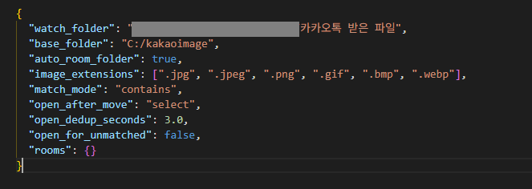
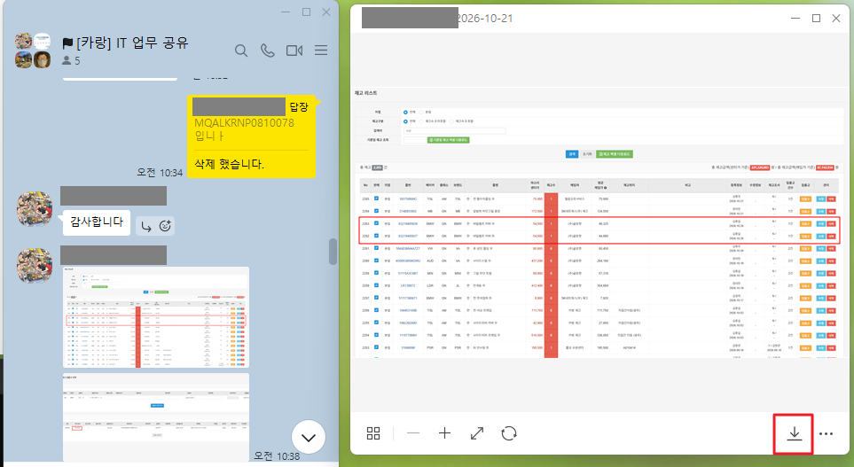
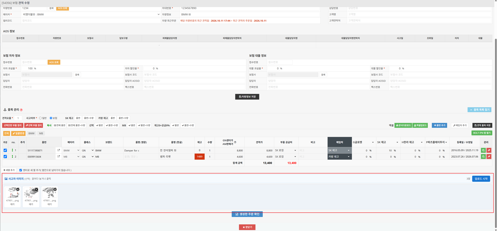

카카오톡 사고차 이미지 견적상세에서 업로드 매뉴얼
분류 프로그램을 켜 두고 카톡방에서 사진을 저장하면, C:\kakaoimage 아래에 카톡방 이름과 같은 폴더가 자동으로 만들어지고 사진이 그 폴더로 옮겨지며 폴더가 열립니다. 열린 폴더에서 IPN 견적 상세로 사진을 끌어다 놓아 업로드합니다.
1. 처음 한 번 설정
1-1. 프로그램 폴더 복사
받은 프로그램 폴더를 통째로 PC의 원하는 위치(예: C:\카카오이미지자동분류)에 복사합니다. 폴더 안에는 아래 파일이 있어야 합니다.
- 카카오이미지자동분류.exe — 분류 프로그램 (이 파일을 더블클릭해 실행합니다)
- config (config.json) — 설정 파일
복사한 뒤 카카오이미지자동분류를 한 번 실행해 봅니다.
- 검은 창에 감시 시작이 표시되면 정상입니다. 창을 닫고 1-3으로 넘어갑니다.
- 스마트 앱 컨트롤이 실행을 차단하면 1-2. 스마트 앱 컨트롤 끄기를 따라 해제한 뒤 다시 실행합니다.
1-2. 스마트 앱 컨트롤 끄기 (차단될 때만)
1-1에서 실행했을 때 아래와 같은 차단 문구가 나온 경우에만 합니다. 차단되지 않았으면 이 단계는 건너뜁니다.
- "스마트 앱 컨트롤에서 이 앱을 차단했습니다" 같은 경고 창
- 검은 창에 "응용 프로그램 제어 정책에서 이 파일을 차단했습니다" 표시
아래 순서로 스마트 앱 컨트롤을 끈 뒤 카카오이미지자동분류를 다시 실행합니다.
- 시작 메뉴에서 Windows 보안을 엽니다.
- 앱 및 브라우저 컨트롤 → 스마트 앱 컨트롤 설정으로 들어갑니다.
- 끄기를 선택합니다.
1-3. 카카오톡 저장 위치 확인
분류 프로그램은 카카오톡이 사진을 저장하는 폴더를 지켜보다가 새 사진을 옮깁니다. 그래서 카카오톡 저장 위치와 config의 감시 폴더가 같아야 합니다.
- PC 카카오톡 왼쪽 아래 설정(톱니바퀴) → 설정 → 채팅으로 이동합니다.
- 받은 파일 저장 위치를 확인합니다. 기본값은
C:\Users\사용자이름\Documents\카카오톡 받은 파일입니다. - 저장할 때마다 위치를 묻는 옵션이 켜져 있으면 끕니다. 다른 폴더에 저장하면 분류되지 않습니다.
- config 파일의
watch_folder에 확인한 경로를 적습니다. 탐색기 주소창에서 경로를 복사해 붙여 넣어도 됩니다.
⚠ 경로를 붙여 넣은 뒤 역슬래시(\)를 모두 슬래시(/)로 바꿔야 합니다.
탐색기에서 복사한 경로는 \로 되어 있어, 그대로 두면 프로그램이 config 문법 오류를 띄우고 실행되지 않습니다.
✕ 틀림: "C:\Users\VINCENT\Documents\카카오톡 받은 파일"
○ 맞음: "C:/Users/VINCENT/Documents/카카오톡 받은 파일"
메모장에서 Ctrl+H(바꾸기)를 눌러 찾을 내용에 \, 바꿀 내용에 /를 넣고 [모두 바꾸기]를 누르면 한 번에 바뀝니다. 이때 config의 다른 줄에는 \가 없으므로 모두 바꿔도 됩니다.
"watch_folder": "C:/Users/사용자이름/Documents/카카오톡 받은 파일",
1-4. 사진 폴더 (자동 생성)
카톡방을 하나하나 등록할 필요가 없습니다. config의 기본 설정은 아래와 같습니다.
"base_folder": "C:/kakaoimage", "auto_room_folder": true,
- 분류 프로그램을 실행하면
C:/kakaoimage와 그 아래_unmatched(미분류) 폴더가 자동으로 만들어집니다. - 카톡방에서 사진을 처음 저장하면
C:/kakaoimage아래에 카톡방 이름과 같은 폴더가 만들어지고 사진이 옮겨집니다. - 폴더 이름에 쓸 수 없는 문자(
\ / : * ? " < > |)는_로 바뀝니다. 예:A/S 문의?→A_S 문의_ - 어느 방인지 알 수 없는 사진(메인 창에서 저장한 경우 등)은
_unmatched로 옮겨집니다. 이 폴더는 자동으로 열리지 않으니, 사진이 보이지 않으면 먼저 확인합니다.
기본 폴더를 바꾸려면 base_folder의 경로를 고칩니다. 경로는 슬래시(/)로 씁니다.
1-5. 특정 방만 다른 폴더로 (선택)
어떤 방의 사진을 기본 폴더가 아닌 곳에 모으려면 rooms에 "카톡방 이름": "저장할 폴더"를 적습니다. 여기 적은 방은 적은 폴더가 먼저 쓰입니다. 필요 없으면 "rooms": {}로 비워 둡니다.
"rooms": {
"[카랑] IT 업무 공유": "D:/견적사진/IT업무"
}

2. 사용하기
2-1. 분류 프로그램 실행
프로그램 폴더의 카카오이미지자동분류를 더블클릭합니다. 검은 창에 기본 폴더: C:\kakaoimage, 방 폴더 자동 생성: 켜짐, 감시 시작이 표시되면 준비가 끝난 것입니다. 이 창은 최소화해 두고 닫지 않습니다.
- 스마트 앱 컨트롤이 실행을 차단하면 1-2. 스마트 앱 컨트롤 끄기를 따라 해제한 뒤 다시 실행합니다.
- "감시 폴더가 존재하지 않습니다"가 나오면 1-3의
watch_folder경로를 다시 확인합니다. - "분류 프로그램이 이미 실행 중입니다"가 나오면 이미 켜져 있는 것입니다. 작업 표시줄의 검은 창을 그대로 쓰면 됩니다.

2-2. 카톡방에서 사진 저장
카톡방을 더블클릭해 별도 창으로 띄우고, 사진을 열어 저장 버튼을 누릅니다.

2-3. 자동으로 열린 폴더 확인
사진이 C:\kakaoimage\카톡방 이름 폴더로 옮겨지고, 폴더가 자동으로 열리면서 방금 저장한 사진이 선택됩니다. 그 방에서 처음 저장하는 사진이면 폴더가 새로 만들어집니다. 같은 사진을 다시 저장해도 같은 방식으로 옮겨집니다.

2-4. 견적 상세에서 업로드
- IPN에서 해당 견적의 견적 상세 화면을 엽니다.
- 열린 폴더의 사진을 사고차 이미지 드래그 영역으로 끌어다 놓습니다. 여러 장을 한 번에 넣을 수 있습니다.
- [업로드 시작]을 누릅니다. 모든 썸네일이 "완료"로 바뀌면 끝입니다.
- 잘못 올린 사진은 썸네일 오른쪽 위의 ×를 눌러 삭제합니다.
사진은 jpg·jpeg·png·gif 형식, 한 장에 4MB 이하만 올릴 수 있습니다. "실패"가 나온 사진은 [업로드 시작]을 다시 누르면 다시 올라갑니다.

3. 꼭 기억할 점
- 카톡방은 반드시 별도 창으로 띄워서 저장합니다. 메인 창에서 저장하면 미분류 폴더로 갑니다.
- 분류 프로그램 창을 닫으면 분류가 멈춥니다. PC를 켤 때마다 카카오이미지자동분류를 다시 실행합니다.
- 사진이 방 폴더에 없으면
C:\kakaoimage\_unmatched를 확인합니다. 그래도 없으면 프로그램 폴더의kakao_image.log를 담당자에게 보내 주세요. - 카톡방 이름이 바뀌면 새 이름으로 폴더가 하나 더 만들어집니다. rooms에 등록한 방이면 config의 방 이름도 고치고 분류 프로그램을 다시 실행합니다.